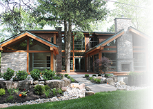
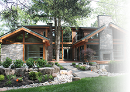

Nestled on a quiet Crescent in the famed Don Mills community 2Spruce House has a design esthetic that is influenced by the craft period and faithful to the mid-century modern architecture of the original surrounding community. The extensive use of wood beam style and stones from the Guelph and Credit valley Limestone formations is reminiscent of the local area mills and farmsteads of days gone by. Preserving the two iconic Norway Spruce trees was a priority and was a natural name for this landmark ecological home.
While the house was designed to the highest technological and environmental standards of the day, the intent from the outset was also to create a dwelling that speaks to you with warmth from the curb and one that transports you through a breathtaking sequence of experiences in light and life.
As you move towards the sculpted walls of glass, wood and stone, the swooping entry canopy embraces you, and you are pulled by the natural features of the site that become one with the home. The expansive front silver maple tree beckons to the second-floor master bedroom balcony that cascades morning light across the undulating cedar and stone facade. A new kind of gravity takes over and draws you up onto the jet-black granite porch that supports the home like a small temple. You touch the craftsmanship of the front door system that is made with exquisite mahogany and 5 separate glazed sidelights that direct curious eyes into the main hall. The exquisite design music played by the entranceway whispers of the flowing continuity of interior and exterior form throughout 2Spruce House - 3700 sq. ft. of melodious ambience of harmony and scale.
Once inside you are ensconced by low canopies of soft LED light, a warm Douglas Fir closet system, and a dramatic sweep of maple wood bench that transforms into the main staircase. Glass banisters and high windows allow your eyes to drink in the warmth of the natural environment as expressed in the two majestic Spruce trees sheltering the private courtyard of 2Spruce House. The 2 Norway spruce trees that grew up against the old foundation of the original Don Mills house are now 70 feet tall and in plain sight as the entire house wraps its west facing wings around them. They have been carefully preserved to provide positive site water management, air conditioning, and a taste of Muskoka in the City. These large carbon-absorbing evergreens provide focal point views from the entry and from many of the interior spaces that look into the courtyard.
The expansive vistas from the anteroom reveal a private access opening directly onto the newly opened and improved leaside rail trail park that connects to the protected original 3km. of uninterrupted community foot/bike paths that Don Mills is famous for - the children do not have to travel along, nor cross a road, to get to the local Public Primary school . The paths cross other roads that eventually lead to the unsurpassed beauty of Edwards Gardens and the rest of the extensive trails in the valleys of the city. The double casement doors from the anteroom lead through the courtyard to the outdoor living room boasting a glassed fireplace that enhances the calming even meditative serenity of the natural stone landscaping.
A fire is burning. The hustle and bustle of the big city has been left behind. The greenery immerses you and 2Spruce House calms and delights, and the monolithic stone slab bridge beckons you to cross over the river-stone swale, and to sojourn in an endless collection of some of Toronto's best wetlands, parks and outdoor spaces.
To reach Darrin Tooth, Sales Representative, please call (416) 569-8627 or email darrintooth@trebnet.com.